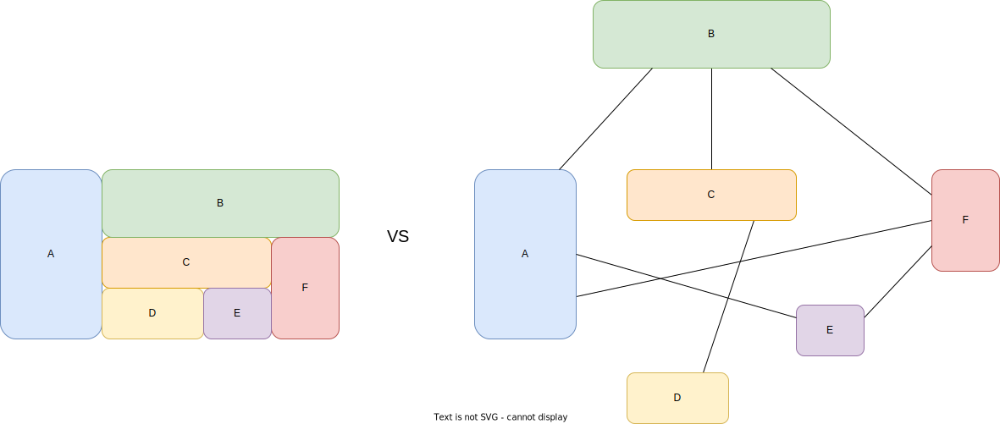

Основные концепции
Прежде чем приступить к основам Kubernetes хотелось бы кратко окунуться в историю развития инфраструктурных решений и программной архитектуры.
Эволюция инфраструктуры

Физические сервера
В давние времена приложения запускались на больших физических серверах. Все в общем-то неплохо работало, но обнаружился ряд проблем.
Приложения делили общие ресурсы сервера, не было возможности задать каждому приложению определенный пул ресурсов. В связи с чем оказывалось взаимное влияние друг на друга, иногда приводящее к неработоспособности критичных элементов. Для исключения взаимного влияния можно было использовать другой физический сервер, что стоило довольно дорого.
Если приложение упиралось в потолок вычислительных ресурсов, то довольно проблематично увеличить ресурсы физического сервера. Необходим длительный простой в работе приложения, а в некоторых случаях это и вовсе невозможно.
В случае же, если необходимо было изолировать приложения на разных серверах, то возникает проблема малой утилизации физического сервера, за которые пришлось заплатить немалые деньги.
Виртуализация
Для решения данных проблем была представлена виртуализация, которая позволила запустить на одном физическом сервере несколько виртуальных.
Приложения в виртуальных машинах ограничены ее ресурсами и не оказывают влияния на приложения в других виртуальных серверах.
Виртуальные сервера гораздо проще масштабировать(в рамках физического сервера). Обычно достаточно перезагрузки, чтобы виртуальная машина запустилась с увеличенными значениями ресурсов.
Появилась возможность уплотнить нагрузкой один физический сервер, что в общем в лучшую сторону сказывается на стоимость инфраструктуры.
Контейнеры
Казалось бы проблемы решены, зачем же тогда контейнеры? По сути своей контейнеры похожи на виртуальные машины, но работают немного по другим принципам.
Изоляция и ограничение по ресурсам здесь происходит на уровне операционной системы.
Нет необходимости запускать в контейнере целую ОС, можно сразу запустить необходимое приложение и не тратить ресурсы на вспомогательные сервисы, а также их обслуживать.
Накладные ресурсы на изоляцию минимальны, что позволяет запустить гораздо больше контейнеров на одном сервере по сравнению с виртуальными машинами.
Но основную популярность контейнеры получили с внедрением DevOps практик, так как давали ряд дополнительных преимуществ:
Гибкость создания и развертывания с помощью образов, что сильно упростило и ускорило настройку приложений и среды для их работы
Идентичная среда для разработки, тестирования и промышленной эксплуатации, за счет использования одного образа на всех этапах
Использование в CI/CD процессах: обеспечивает надежную и частую сборку, а также развертывание с возможностью быстрого отката
Хорошо подходит для микросервисной архитектуры, позволяя легко создавать отдельные небольшие слабосвязанные приложения
Эволюция архитектуры приложений

Говоря о том, как контейнеры обрели популярность, хочется также затронуть тему микросервисной архитектуры и коротко провести сравнение с традиционной монолитной.
Монолитная архитектура
Монолитные приложения состоят из сильно связанных между собой компонентов, разрабатываются и разворачиваются как единое целое. Со стороны операционной системы они часто представляют единый процесс(или группу), выполняя одновременно множество задач и потребляя большое количество ресурсов.
Хочется сразу же отметить ряд недостатков такого подхода:
Небольшие изменения в одном из компонентов требуют переразвертывания всего приложения
Требуются сервер с большим количеством ресурсов, сложнее горизонтальное масштабирование, а вертикальное масштабирование очень быстро достигает своего предела
Нет возможности масштабирования только тех компонентов, которые этого требуют
Отказ одного из компонентов приведет к неработоспособности всего приложения
Единая кодовая база, сложная структура, сложность замены компонентов
Микросервисная архитектура
Для решения данных проблем было предложено разделить компоненты на отдельные небольшие слабосвязанные приложения - микросервисы. Каждый микросервис работает как отдельный процесс и взаимодействует с другими микросервисами с помощью простых заранее определенных интерфейсов(API).
Данный подход решает проблемы монолитной архитектуры:
Микросервисы можно развертывать независимо, что позволяет обновлять отдельные компоненты
Отдельные микросервисы не потребляют большое количество ресурсов, гораздо проще горизонтальное масштабирование
Можно масштабировать только те микросервисы, которым действительно нужны ресурсы
Отказ одного компонента затронет лишь ту часть приложения, которая от него зависит
Разработку можно вести разными командами, на разных языках и с разным технологическим стеком
Kubernetes
Мы рассмотрели какие преимущества нам дают контейнеры, но для построения отказоустойчивой и высоконагруженной промышленной среды этого недостаточно. Тут нам и понадобится Kubernetes, он дарит нам такие возможности:
Управление размещением контейнеров и их жизненным циклом на большом количестве нод
Масштабирование(в том числе автоматическое) и распределение нагрузки
Конфигурация через декларативное описание(yaml)
и другие.
Основные компоненты
Компоненты kubernetes можно разделить на компоненты панели управления(control plane) и компоненты узла(node).
Control Plane
Компоненты контрольной панели отвечают за основные операции в кластере, такие как:
Обработка операций взаимодействия с кластером(напр. создание, изменение, удаление объектов)
Управление размещением приложений по нодам
Отслеживание ресурсов и событий в кластере и их обработка
и другие.
kube-apiserver
API сервер в kubernetes представляет из себя REST интерфейс для взаимодействия с кластером, он позволяет производить CRUD операции над объектами kubernetes.
etcd
Распределенное и высоконадежное хранилище данных в формате «ключ-значение», которое используется как основное хранилище всех данных кластера в kubernetes.
kube-scheduler
Отслеживает созданные поды без привязанного узла и выбирает узел, на котором они должны работать на основании множества факторов.
kube-controller-manager
В терминах kubernetes можно часто встретить понятие «контроллер». Контроллер - это процесс, отслеживающий состояние какого-либо типа ресурса в kubernetes API и реагирующий на изменения, пытаясь привести текущее состояние объекта к его ожидаемому состоянию, описанному в API.
Контроллер менеджер содержит в себе набор контроллеров для основных типов ресурсов в kubernetes API.
cloud-controller-manager
Запускает контроллеры, которые взаимодействуют с основными облачными провайдерами.
Отказоустойчивый кластер

Для компонентов контрольной панели в промышленной эксплуатации обычно выделяют отдельные ноды, называемые мастерами(или control plane ноды). Минимальный и рекомендуемый набор состоит из трех мастеров. Такой набор в основном обусловлен принципами работы etcd, так как основной проблемой в построении отказоустойчивой системы является распределенное хранилище данных. В качестве алгоритма распределенного консенсуса используется raft, визуализацию работы которого можно посмотреть по ссылке. В raft кворум достигается при работающих N/2+1 узлах, где N - это общее количество узлов. Такое правило необходимо для исключения split-brain, когда две(или более) группы нод могут из-за каких-либо проблем в сети изолироваться друг от друга и независимо выбрать себе лидера. Таким образом при отказе одного мастера - два других будут иметь кворум и продолжат работать. При большом же количестве мастеров увеличится отказоустойчивость(количество нерабочих нод может быть больше при сохранении кворума), но также увеличится нагрузка на базу, ведь каждую транзакцию необходимо отреплицировать между всеми мастерами.
Остальные компоненты также запущены на всех мастерах: все экземпляры apiserver параллельно могут обрабатывать запросы и производить операции в базе, а среди экземпляров controller-manager и scheduler лидерство занимает один из инстансов и выполняет всю работу, пока остальные ожидают.
Node
Компоненты узла работают на каждом узле, поддерживая работу подов и среды выполнения Kubernetes.
kubelet
Отслеживает контейнеры, которые были назначены на ноду, на которой он запущен и управляет их жизненным циклом.
kube-proxy
Занимается конфигурацией ноды для возможности маршрутизации(балансировки) трафика к контейнерам на основании ресурса service.
container runtime
Программа, предназначенная для выполнения контейнеров, реализующая CRI: Docker, containerd, CRI-O.
API Kubernetes
Объект
Объекты Kubernetes - это сущности, которые хранятся в нем, а также отражают текущее состояние, например:
Конфигурация и состояние нод кластера(Node)
Конфигурация и состояние развертывания приложения(Deployment)
Конфигурация данных для приложения(ConfigMap)
Для управления объектами существует множество инструментов как с графическим интерфейсом, так и с консольным, либо можно взаимодействовать с API напрямую любым HTTP клиентом.
Пример создания объекта pod через утилиту kubectl в режиме dry-run(без создания объекта в API) и с выводом содержимого на экран в yaml формате:
kubectl run --image=nginx nginx --dry-run=client -o yaml
apiVersion: v1
kind: Pod
metadata:
creationTimestamp: null
labels:
run: nginx
name: nginx
spec:
containers:
- image: nginx
name: nginx
resources: {}
dnsPolicy: ClusterFirst
restartPolicy: Always
status: {}
Для любого объекта присущи такие поля как apiVersion и kind характеризующие тип объекта(ObjectType), а также metadata, которая хранит в себе ряд метаданных(ObjectMeta), таких как:
name - имя объекта
namespace - объекты делятся на два типа(scope): namespaced и cluster-wide, для первого типа в этом поле указывается имя неймспейса
labels - набор меток(ключ-значение), по которым можно производить фильтрацию и операции выборки
annotations - набор аннотаций(ключ-значение), в которых можно сохранить дополнительную информацию
и другие.
В большинстве объектов также присутствуют поля spec и status. В поле spec описывается ожидаемое состояние объекта, а в поле status отражается состояние приведения текущего состояния к ожидаемому.
Структура путей
Если обратиться к API через любой HTTP клиент без указания конкретного пути, то в ответ можно получить список
path c набором доступных путей, среди которых есть пути начинающиеся с /api и /apis.
$ kubectl get --raw /
{
"paths": [
"/.well-known/openid-configuration",
"/api",
"/api/v1",
"/apis",
"/apis/",
"/apis/admissionregistration.k8s.io",
"/apis/admissionregistration.k8s.io/v1",
"/apis/apiextensions.k8s.io",
"/apis/apiextensions.k8s.io/v1",
"/apis/apiregistration.k8s.io",
"/apis/apiregistration.k8s.io/v1",
"/apis/apps",
"/apis/apps/v1",
...
/api - core группа, которая считается устаревшей, доступна по пути /api/v1 и использует
в объектах apiVersion: v1
/apis/$GROUP/$VERSION - именованные группы используют в объектах apiVersion: $GROUP/$VERSION
Далее, чтобы получить список ресурсов конкретного типа, в зависимости от того namespaced этот ресурс или cluster-wide, можно пойти двумя путями:
/apis/$GROUP/$VERSION/$RESOURCE- для cluster-wide ресурсов(/apis/apiregistration.k8s.io/v1/apiservices)/apis/$GROUP/$VERSION/namespaces/$NAMESPACE/$RESOURCE- для namespaced(/apis/apps/v1/namespaces/default/deployments)
Ну и для обращения к конкретному ресурсу необходимо просто указать его имя в конце пути:
/apis/$GROUP/$VERSION/namespaces/$NAMESPACE/$RESOURCE/$NAME